Des pâtisseries 100% naturelles, confectionnées artisanalement avec des produits locaux et de saison. Chaque création est une invitation au plaisir et à l'authenticité.
Chez Dan CaKe, chaque pâtisserie est une œuvre unique, réalisée sur commande dans le respect de la saisonnalité des fruits. Sans additifs ni colorants, nos créations révèlent toute la richesse des saveurs authentiques, des classiques français aux créations végétales et sans gluten.
Sans additifs, sans colorants artificiels
Fruits de saison de La Réunion
Confectionné artisanalement
Personnalisé selon vos envies
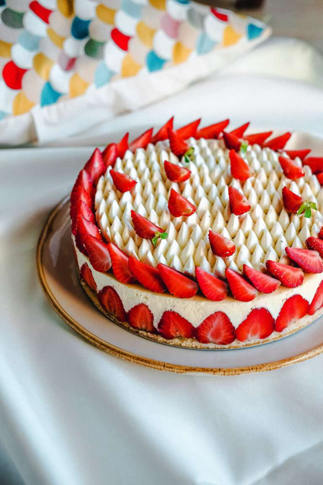
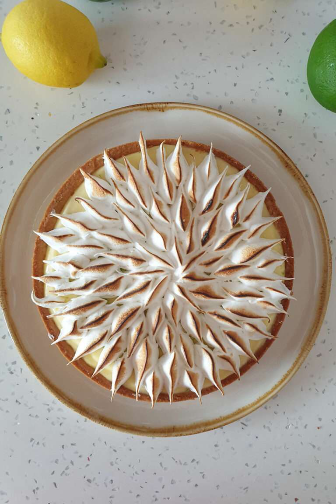
De la tarte aux fruits à l'entremets raffiné, chaque pièce est unique et réalisée avec passion dans notre laboratoire de Saint-Denis.
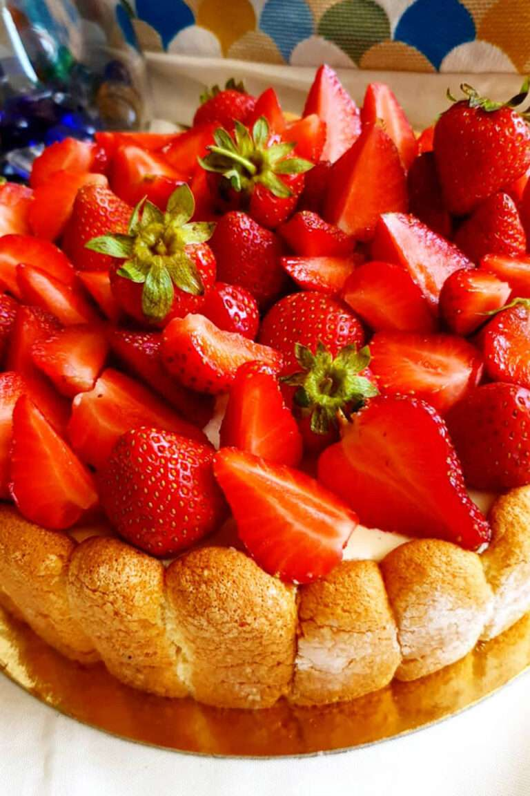
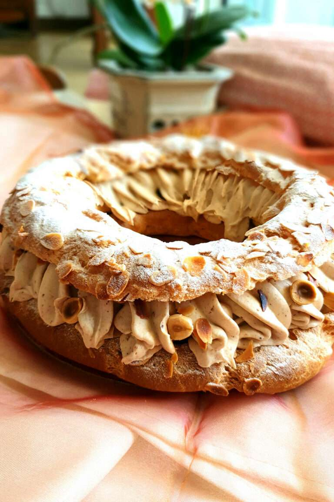
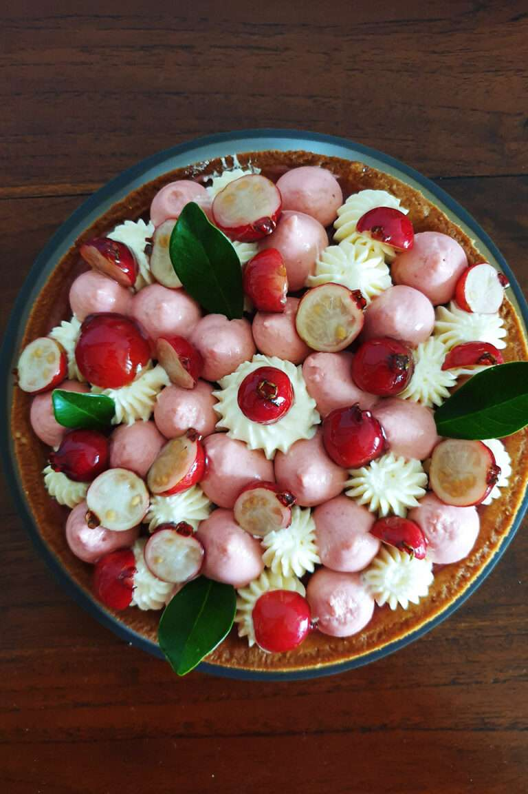
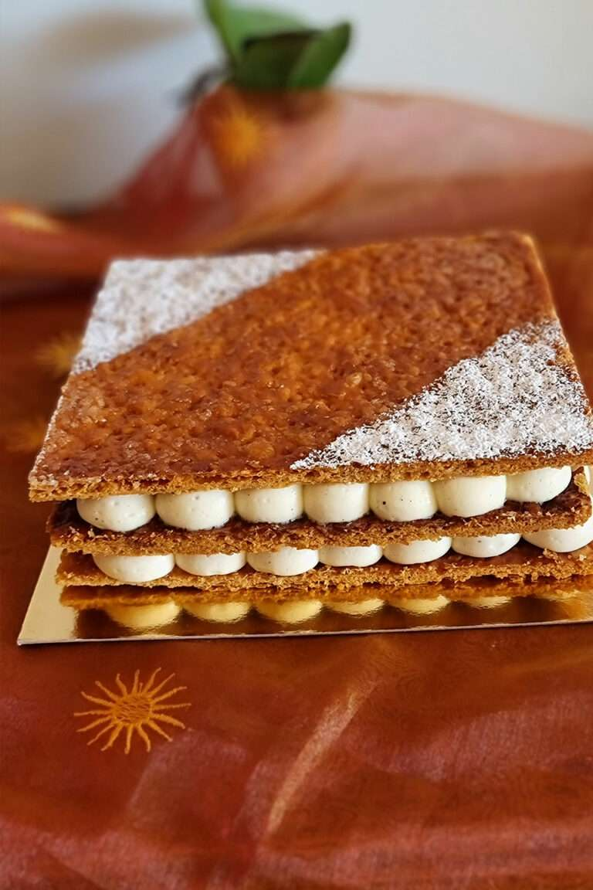
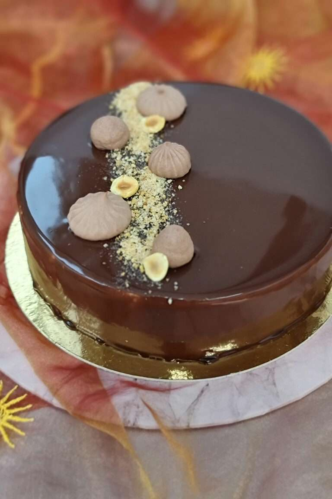
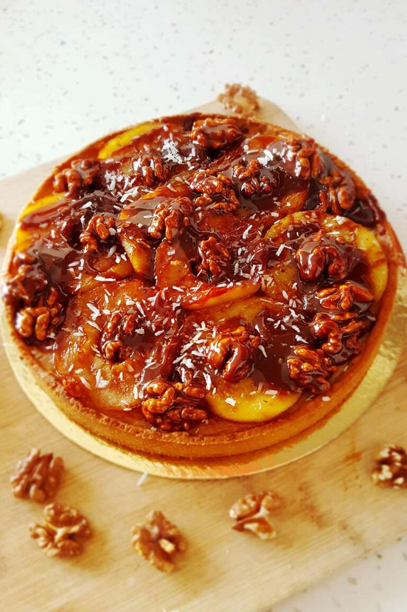
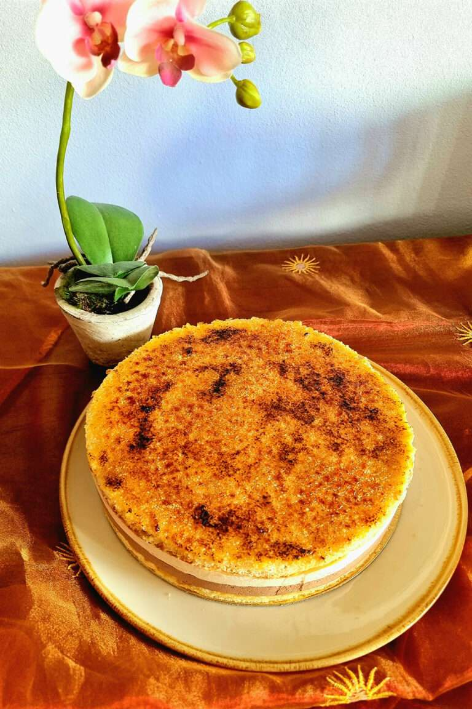
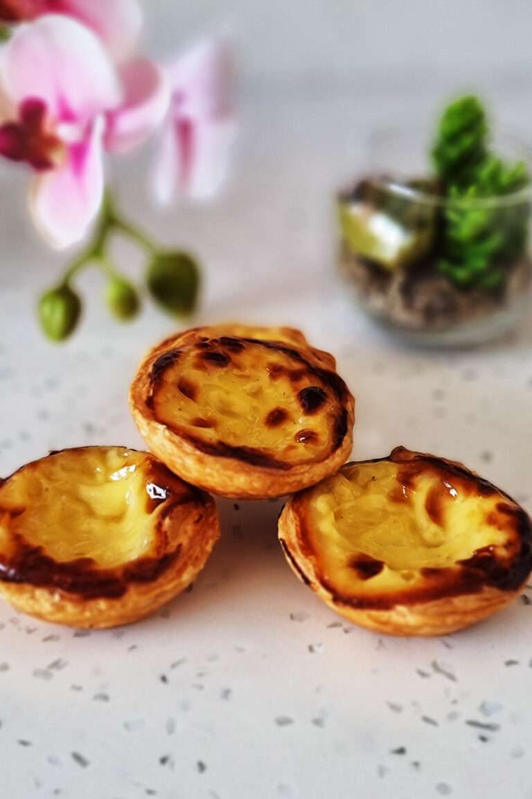
Explorez nos collections, toutes confectionnées avec passion et exigence, pour satisfaire toutes les envies et toutes les occasions.
Classiques français revisités avec soin : tarte au citron, mille-feuille, saint-honoré, paris-brest…
Réalisés avec les fruits du moment pour des saveurs au plus proche de la nature et du terroir réunionnais.
Un voyage gourmand à travers les saveurs créoles et françaises : pastei, gâteau patate, gâteau manioc…
Des créations entièrement végétales, sans produits d'origine animale, aussi belles que délicieuses.
L'expression artistique de Danielle : des créations uniques et surprenantes, signatures de la maison.
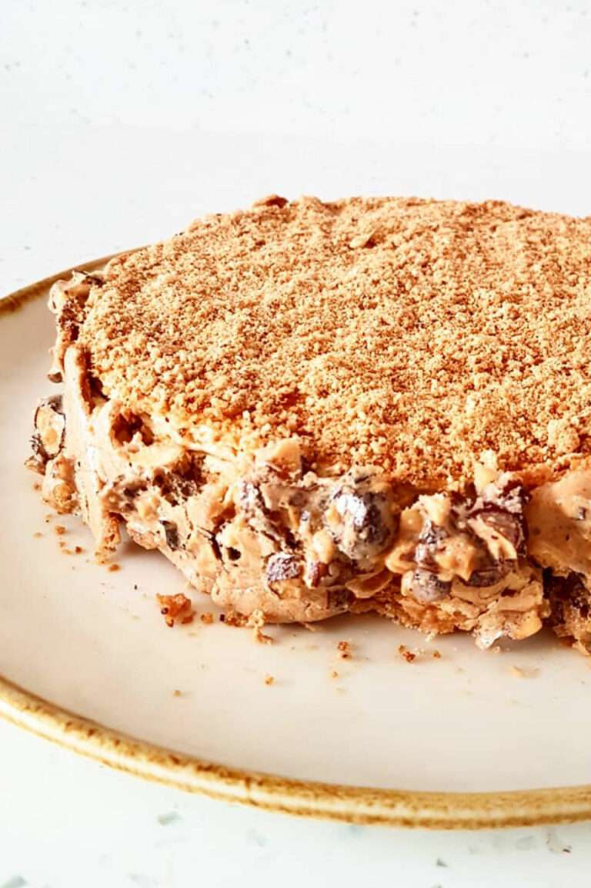
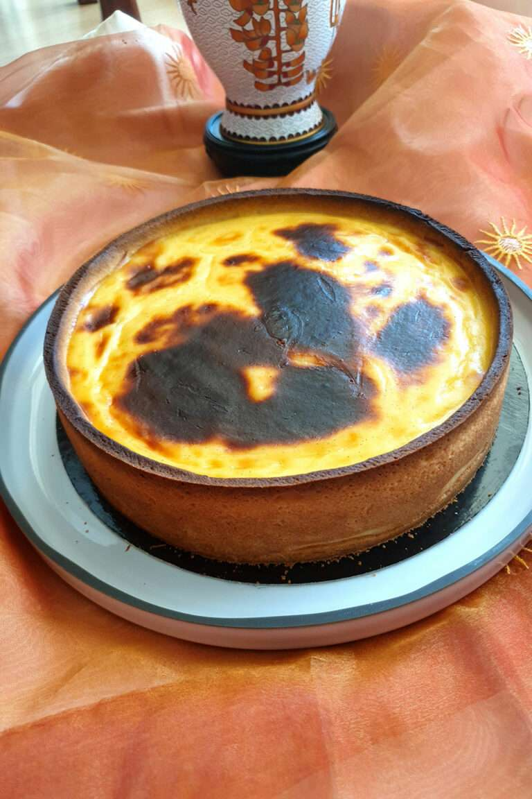
"La pâtisserie, c'est l'art de transformer des ingrédients simples en émotions inoubliables."
Danielle, passionnée de cuisine et de pâtisserie depuis l'enfance, a créé Dan CaKe pour partager ses gourmandises remplies d'émotion avec tous les amoureux de belles saveurs.
Installée dans son laboratoire artisanal au cœur de Saint-Denis, elle confectionne avec soin chaque pâtisserie à la main, en sélectionnant rigoureusement les meilleurs ingrédients locaux. Son engagement : zéro additif, zéro colorant, que du naturel et de l'authentique.
Des créations végétales aux grands classiques français, en passant par les spécialités réunionnaises revisitées, chaque gâteau raconte une histoire et crée un souvenir.
Toutes nos pâtisseries sont disponibles en retrait directement à notre laboratoire de Saint-Denis. Commandez en avance pour garantir votre création.
45 Rue Monthyon
97400 Saint-Denis, La Réunion
Sur rendez-vous uniquement
Du lundi au samedi
Retrait sur rendez-vous uniquement · Commande à l'avance recommandée
Découvrez les témoignages de nos clients qui apprécient la qualité, la fraîcheur et l'originalité de nos créations.
Une pâtisserie exceptionnelle ! Le fraisier de Danielle est tout simplement divin. Les saveurs sont authentiques, la présentation magnifique. Je commande régulièrement pour mes anniversaires et mes invités sont toujours émerveillés.
J'ai commandé un Paris-Brest pour l'anniversaire de ma mère. Quelle surprise ! La qualité est incomparable, le praliné parfait, et la pâte à choux légère comme un nuage. Merci Danielle pour ce moment de bonheur !
Le Charlotte aux fraises était une pure merveille. On sent vraiment la différence avec une pâtisserie industrielle. Le fait maison, avec des produits locaux, ça se goûte ! Je recommande Dan CaKe les yeux fermés.
Danielle est une véritable artiste. Sa tarte aux fruits de la passion est un équilibre parfait entre l'acidité et la douceur. J'adore aussi qu'elle propose des options végétales, c'est rare et tellement appréciable.
Une découverte merveilleuse grâce à une amie. La tarte aux goyaviers m'a complètement bluffé - ça goûte vraiment la Réunion ! Le croque-en-bouche pour notre mariage était spectaculaire. Merci du fond du cœur.
Depuis que j'ai découvert Dan CaKe, je ne commande plus ailleurs. La qualité est constante, les créations toujours originales et l'accueil de Danielle est chaleureux. Un vrai coup de cœur péi !
Vous avez dégusté une création Dan CaKe ? Partagez votre expérience !
Partagez votre expérience